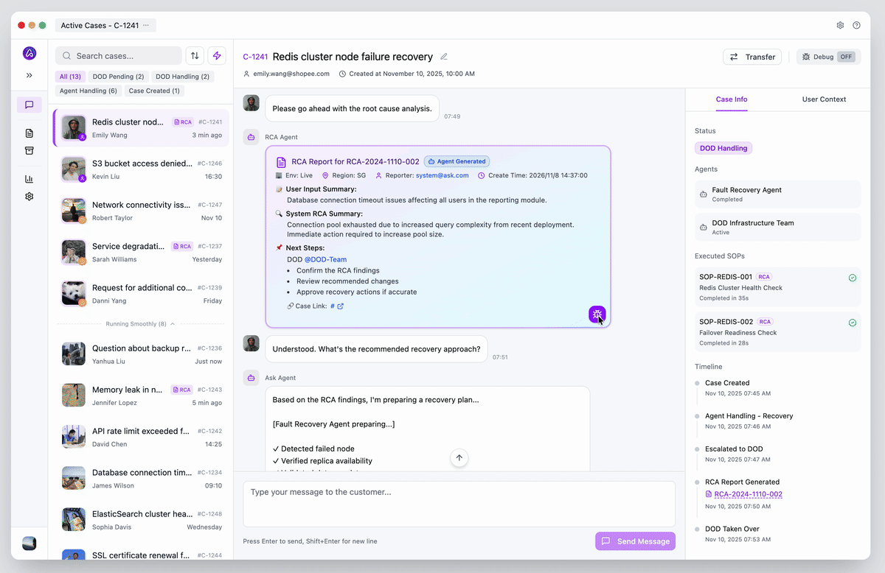
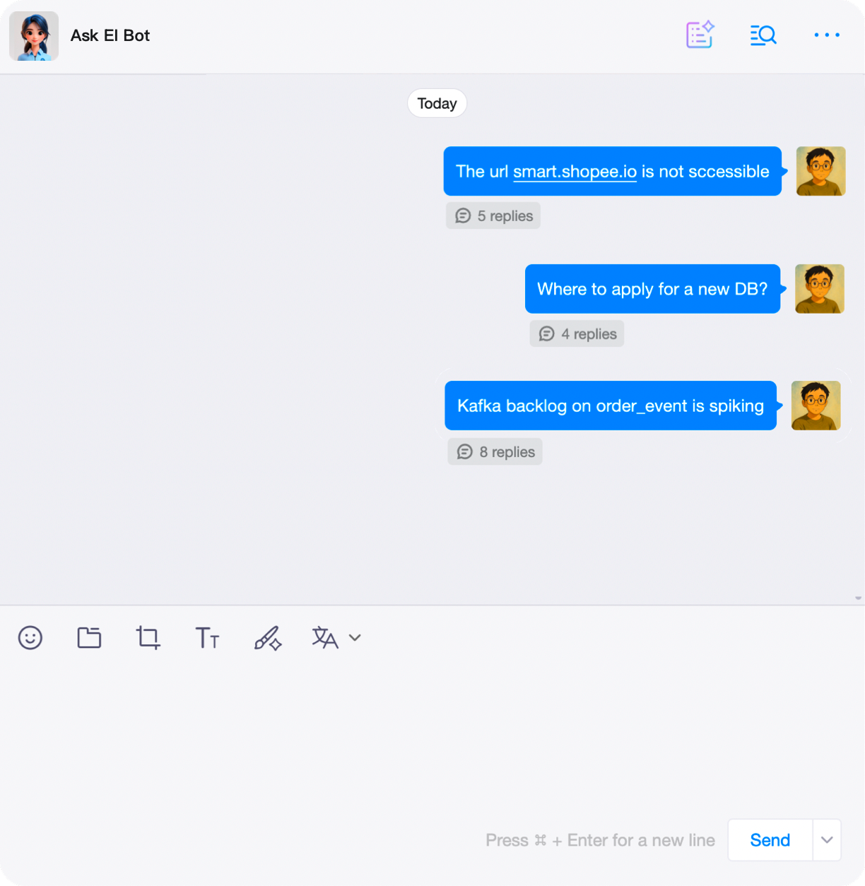
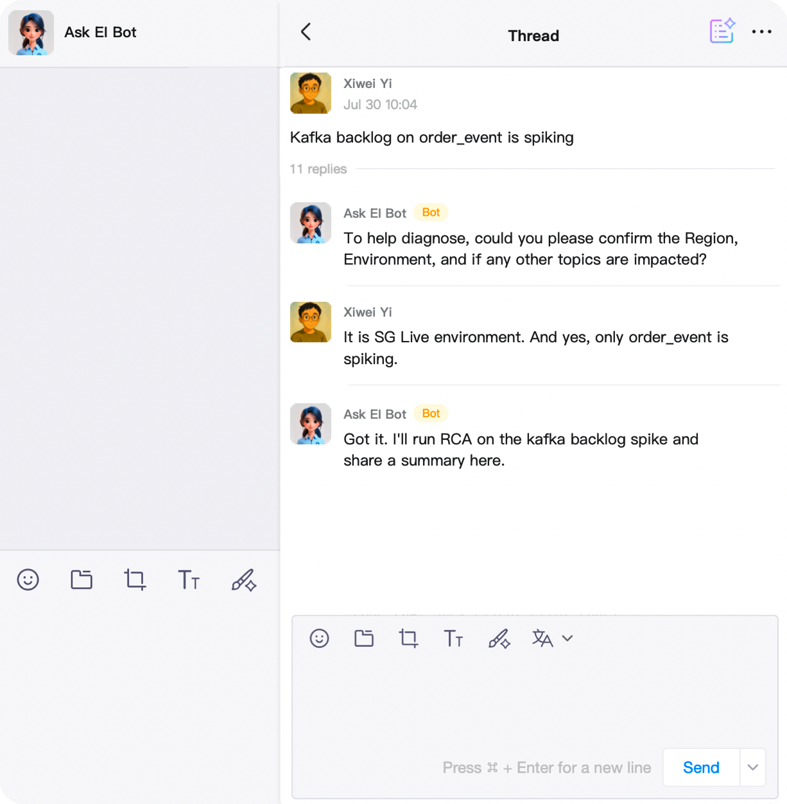
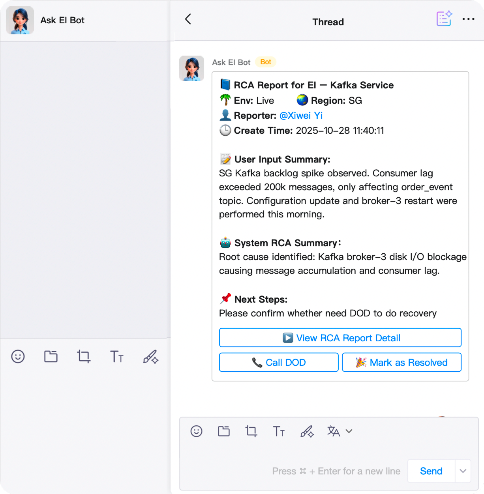
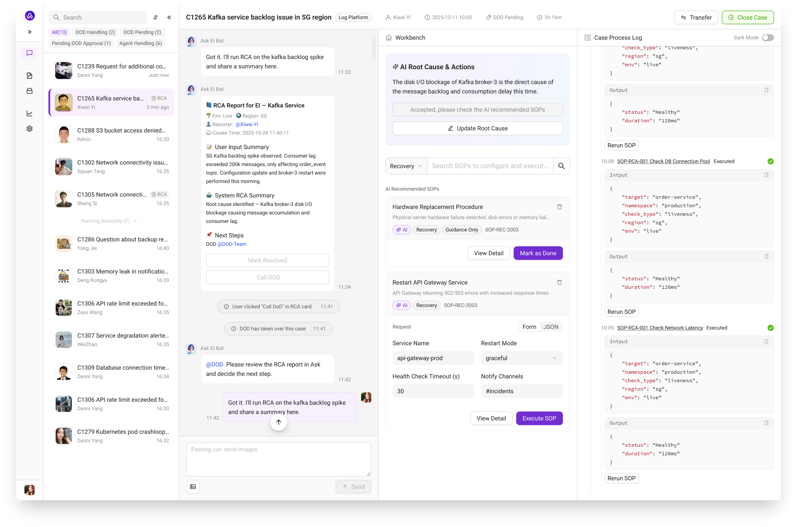
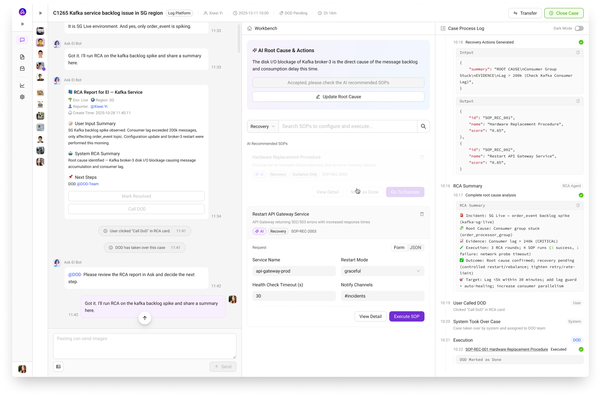
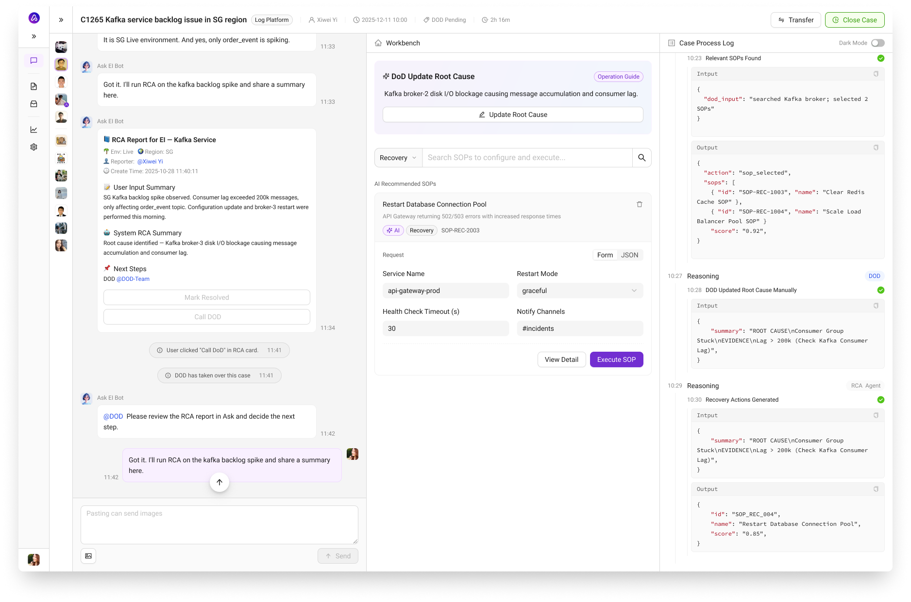
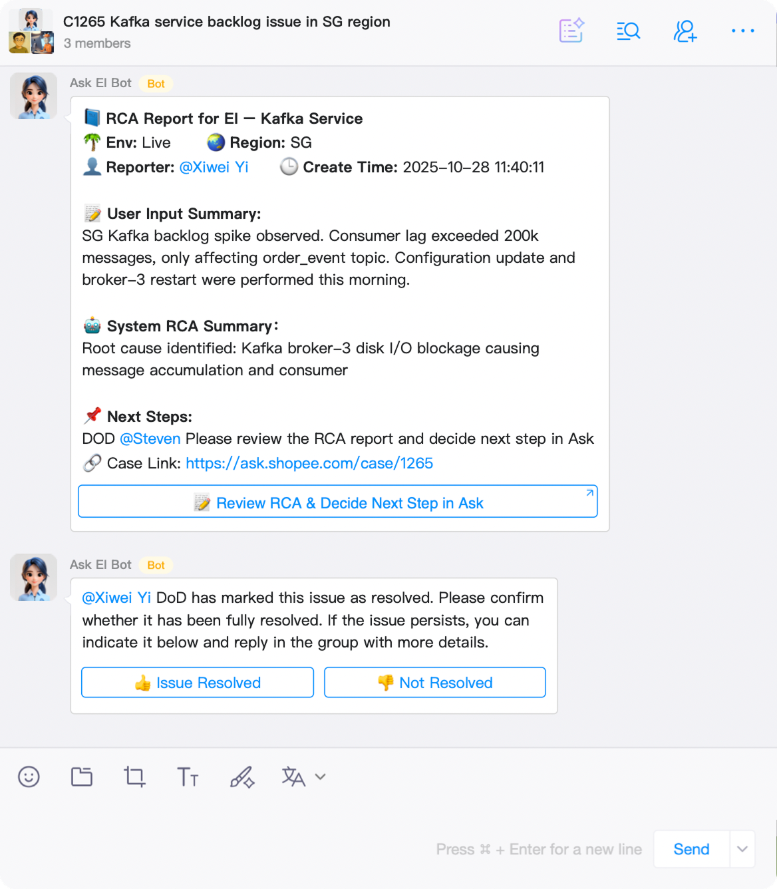
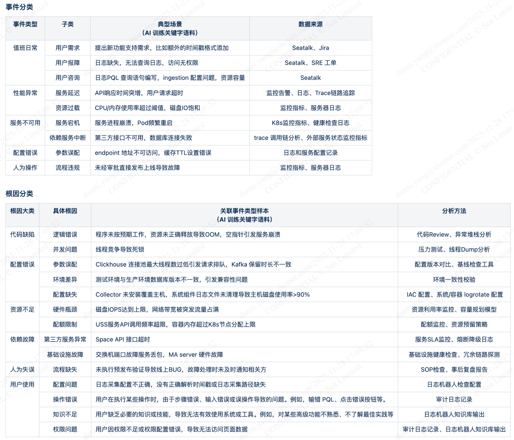
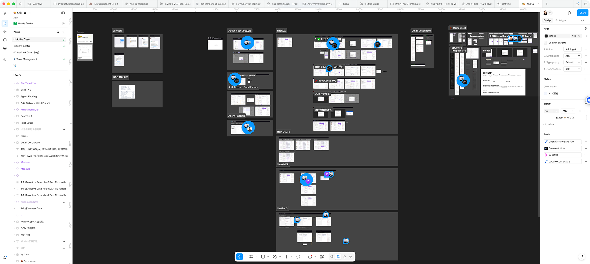

01 / 接手与首版
三天里，先把产品全貌拼出来
接手 Ask面向一线值班的 AI 产品：用户报障后，AI 先分析、再处置，值班专家在关键节点授权、纠正或接管。 时，距离一次重要汇报只剩三天。需求分散在几位 TPM 手里，还没有一份能把主要角色和流程串起来的完整说明。我先分别找他们沟通，边讨论边画低保真框架用简单线框表达页面结构与流程的草稿，边讨论边改，用来快速对齐理解。，把模块之间缺失的信息补上：谁提出问题，AI 处理到哪一步，DODDaily On Duty，当班值班工程师：当天值班、处理一线用户问题的开发工程师。Ask 在需要人工介入时，把问题升级给他们处理。 什么时候需要进来。
三天要交付一个大型产品，页面量一页页手工画，画不完，质量也守不住。我用 Figma MakeFigma 的 AI 生成能力：从描述与参考生成可运行、可交互的界面方案。2025 年 5 月发布测试版，7 月 25 日才向所有用户开放——2025 年末用它生成完整的大型产品几乎没有先例。 搭建可运行、可交互的高保真方案接近真实产品形态的可交互原型：能点击、能走查，不只是静态图。。三天做出首版，期间与 Figma Make 的对话累计约一千轮；产品和技术负责人评审时，已经可以直接点击、走查把方案或交付物完整走一遍，核对是否与预期一致，问题修正后回到相同分支复验。整个方案。
首版 Demo 的三个片段
打开需要关注的 Case
多案例入口：需要关注的 Case 集中呈现。

回顾案例上下文
进入案例时，把之前的经过一起带上。

查看 SOP 目录
处理能力被整理成可以查阅的资产。
02 / 现场与事后，是两种工作
通过了评审，Debug 仍然要重做
到了向 CTO首席技术官：公司技术方向的最高负责人。Ask 首版向他演示时，Debug 被指出不符合专家真实操作。 演示时，Debug问题处理中的排查环节：处理者查看判断与执行过程，找出偏差。Ask 的首版在这里被指出不符合真实操作。 环节被指出了问题：这套操作不符合 DOD 实际处理问题的方式。在此之前，首版已经通过了产品和技术负责人的评审。能把流程演示出来，还不足以说明它能接住真实工作。
回头想，问题不在某个按钮：一线 DOD 的工作是解决用户问题，而不是帮 AI 改进——后者是另一种工作，而且与前者立场不同。首版让处理者进入 AI 的 执行树把 AI 的判断与执行过程展开成节点树，可查看、标记与修改。Ask 首版让处理者直接操作它，后来被重做。、查看节点、标记问题、改选 SOPStandard Operating Procedures，标准处理流程：把处理问题的步骤整理成可执行流程或人工操作文档，供 AI 调用或人员查阅。，等于把「帮 AI 进步」塞进了「处理问题」的流程。所以后续我把重点放回专家正在处理的事：是否认可根因，是否采用推荐方案，要不要自己继续排查；而帮 AI 改进的部分，放到事后的工作区里单独做。现场处置与事后优化，是两种工作，可以解耦。

根据汇报反馈调整过的方案，随后用于专家用户Ask 要支持的真实使用者——一线值班专家。产品的操作流程依据他们的真实工作方式设计。访谈。多轮调整之后，才有了下面的 Active Case一次求助从受理到复盘的全过程：记录、判断与处置都发生在这个工作区里。 工作台。
03 / 一次求助的完整路径
从一次求助，接到专家的工作台
- 用户报障在聊天里描述遇到的问题
- AI 分析与建议追问环境与影响范围，给出根因报告
- 专家介入授权、纠正或接管，判断留给专家
- 执行与确认AI 执行处置，提问者确认结果
- 事后复盘偏差由维护者回看与改进
一次求助的完整路径：AI 处理到关键处，人介入；事情解决后，经验回流。
一次求助在产品里走完上面这条路径。用户从聊天中提出问题，Ask 继续询问环境、区域和影响范围，再给出 RCARoot Cause Analysis，根因分析报告：定位问题根本原因的结论。Ask 生成初步判断，供值班专家确认、修正或继续排查。（根因分析）报告。需要 DOD 介入时，聊天记录和报告一起进入协作群，DOD 通过案例入口进入工作台处理案例的主界面：对话、判断与执行经过并列，专家在这里介入和决策。，带着已有的上下文继续处理。用户侧发生的是四个连续的画面：





工作台把三件事并列放在眼前：左侧保留用户的描述，中间处理当前判断和动作，右侧查看执行经过。了解现场、决定下一步、核查经过，在同一个画面里完成。
04 / 判断与协作，决定流程怎么走
专家怎么判断、怎么协作，流程就怎么走
DOD 看过报告后，不会只有「同意」或「拒绝」两种选择。我把处置拆成几条能够继续往下走的路径。认可根因问题发生的根本原因，RCA 报告给出的核心结论；专家的授权与纠正都围绕它进行。后，先接受这一判断，再查看推荐的恢复方案、核对步骤和参数，最后决定是否执行。接受诊断结论，并不同时授权恢复操作；人工操作指南的完成标记，也不能代替一次系统执行。
认可根因，再核对和执行方案
先接受根因
Accept 之后，才出现 Agent 推荐的恢复方案。

查阅 SOP 详情
核对步骤与参数，再决定是否执行。

人工指南标记完成
Guidance 类型用 Done；可执行 SOP 才用 Execute。

根因成立、推荐方案不合适，就保留已有判断，重新搜索和配置恢复 SOP。连根因也不认可时，DOD 可以自己选择诊断 SOP，核对输入并运行，从过程日志里查看结果，不必先接受错误结论才能继续。
根因成立，换一个恢复方案
重新搜索 SOP
保留已有根因，搜索其他恢复方案。

配置参数
选择不等于执行，还要完成配置。

不认可根因，自己继续排查


还有一种情况：DOD 已经找到了原因。这时可以直接更新根因，Agent能自主执行任务的 AI 程序：根据输入选择行动、调用工具并给出结果。Ask 用它分析问题、推荐并执行处置方案。 根据新的信息重新推荐恢复方案——人的介入不必把工作全部退回起点，已经确认的信息和做过的动作都应该接着用。
已经找到原因，直接纠正结论
编辑根因
先更新结论，再看新的恢复建议。

新的恢复建议
Agent 依据人工更新的来源重新推荐。

问题牵涉多个团队时，一个 DOD 未必能独自给出答案。我设计了按团队邀请当班 DOD 的会诊问题牵涉多个团队时，邀请各团队的当班专家在同一案例中分别给出判断与处理结果。入口，带上案例摘要；每位参与者填写本团队的判断与处理情况，提交后仍可修改，也会同步到对话中。谁已经排除了本团队的问题，谁完成了修复，都能在同一处看见。
邀请、填写、提交与多人进度


查看提问者的结果确认

05 / 事后看懂偏差
事情处理完了，偏差还要有人看懂
DOD 标记完成后，提问者还需要确认问题是否解决。关单问题解决并经提问者确认后，关闭这个案例，同时记录根因与人工处理情况。时，除了根因与处理信息，我也保留了「是否在 Ask 之外做过手工处理」的记录。最终解决了一个问题，需要知道 AI 帮到了哪里，又有哪些工作是人继续接住的。
现场处置与事后优化分开，落点就在这里：现场的人负责把问题解决掉；帮 AI 变好，是另一种工作，要在事后由专门的人来做。所以复盘不占用一线 DOD：处理经过、偏差和人工补救，都留在案例记录里，让维护者事后能看懂 AI 在哪一步判断错了、人补了什么。
打标与偏差，留给事后的人


查看 DOD 打标情况参考

06 / 资产要能调用，也要能维护
处理经验要能调用，也要能维护
AI 的处理能力来自 SOP 目录：类型、用途、状态和负责团队都写在目录里；新增 SOP 时，可执行 SOP可以由系统直接调用执行的流程，接入能力平台并配置参数与人工确认。 与人工文档供人员查阅的操作说明，维护 Ask 之外的步骤；与可执行 SOP 是两条不同的配置路径。是两条不同的配置路径。现场 DOD 使用 SOP，维护者在事后更新它们——同一个资产，两种用途，各走各的入口。
SOP 目录与详情
目录
类型、用途、状态和负责团队都在目录里。

详情
适用场景、调用信息、参数与人工确认配置。

07 / SOP 的执行方式
可执行 SOP，由 Smart 来运行。
Smart面向 Agent 与 Workflow 的 AI 应用构建平台，支持 Agent 配置、工作流编排、测试与发布。Ask 的可执行 SOP 用它的工作流模式搭出来。相关介绍并入 Ask 篇。 是团队已有的 AI 应用构建平台：面向 Agent 与 Workflow，从创建 Agent 开始，多个节点在同一张画布上连接，也可以直接选用已经发布的 Agent；每个节点单独测试状态，确认无误再接入流程。
Ask 的可执行 SOP，用 Smart 的工作流模式把「做什么」编排成节点流程，配上参数与人工确认，再由 Ask 直接调用。Ask 没有从零造一套执行引擎，而是直接用团队已有的 Smart。
AI 构建平台上的四个画面


我在 Smart 里的参与是设计系统侧的：指导主题定制，与项目设计师共建业务组件；产品的一线需求和页面设计由项目设计师负责。
Ask 的 SOP、Smart 的工作流模式，都是模型还不够强时的中间形态：用编排把能力先组织起来，让事情先跑起来。等模型自己会规划，这一层会被吸收或重组——它们不是终点，是当时能用的最好一层。想明白这一点之后，我把它写进了思考栏的 《当模型自己会规划，哪些判断还值得人做？》。
08 / 把方案交成资产
把方案交成团队能继续改的资产。
基本定稿后，我把所有页面从 Make 转回 Figma DesignFigma 常规设计工作区：页面、组件与变量都在其中整理，是设计交付和维护的主阵地。 继续整理——页面、业务组件把业务规则封装进可复用的界面组件，让协作规则在后续设计中继续被使用。、InfraDInfra Design System 的简称：企业级基础设施设计系统，由设计与前端共同建设维护。 变量与主题，形成团队能继续修改的设计文件。Make 生成的是 Figma 自己的前端实现，不符合公司生产环境的要求；但正是它让我在三天里做出了可运行的首版，让产品定义先跑起来。当时公司里还没有设计师用这种方式做出过可运行的大型产品方案。中间态不是白做的：它让事情先跑起来，也让最终要交下去的资产，有了具体的样子。三条路径的更多探索，写在 《我试着把自己蒸馏给 AI，只成功了一部分。》 里。
查看转回 Figma Design 的设计文件

相关文件涉及企业内部信息，可在面试交流中结合脱敏处理后的材料展开介绍。